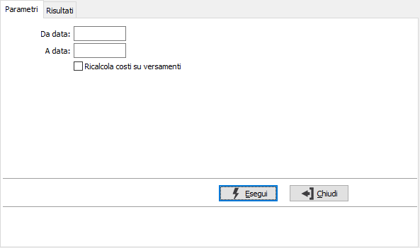
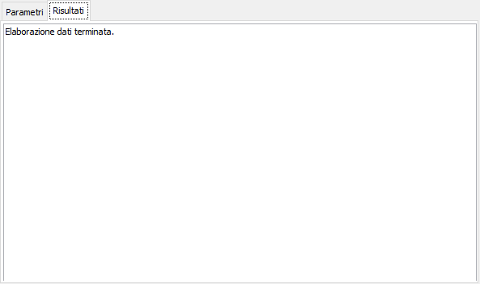

Aggiornamento valori magazzino
In uno scenario perfettamente organizzato i costi dei materiali e delle lavorazioni dovrebbero essere sempre aggiornati correttamente, ma questo spesso non corrisponde alla realtà (il DDT di acquisto delle materie prime non riporta i prezzi, il rientro dal terzista non ha un prezzo definito) e quindi si rende necessario aggiornare i costi “on demand”. A tale esigenza risponde quindi questa funzione che partendo dagli elementi di base (materie prime) provvede ad aggiornare in cascata tutti i movimenti di carico da produzione.
Come parametri di elaborazione viene richiesto un periodo di elaborazione obbligatorio. Oltre ad aggiornare i costi delle materie è possibile aggiornare anche i costi dei versamenti (ad esempio nel caso di modifica di costi risorsa e operatore) spuntando la casella "Ricalcola costi su versamenti".

Premendo il pulsante Esegui sarà avviata l'elaborazione ed al termine sarà visualizzata la pagina dei risultati con gli eventuali messaggi o la sola notifica di "Elaborazione dati terminata".
